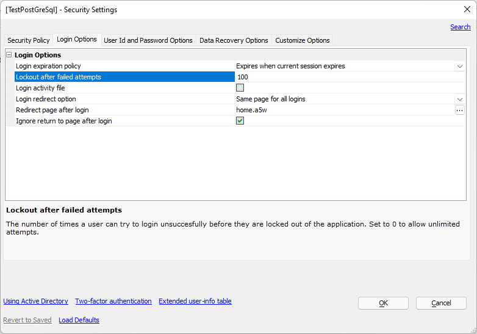
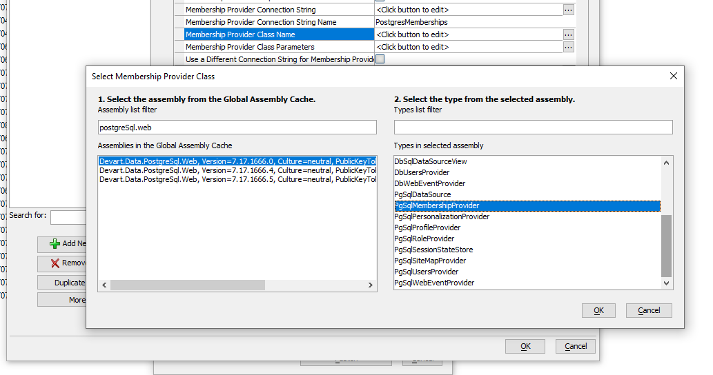
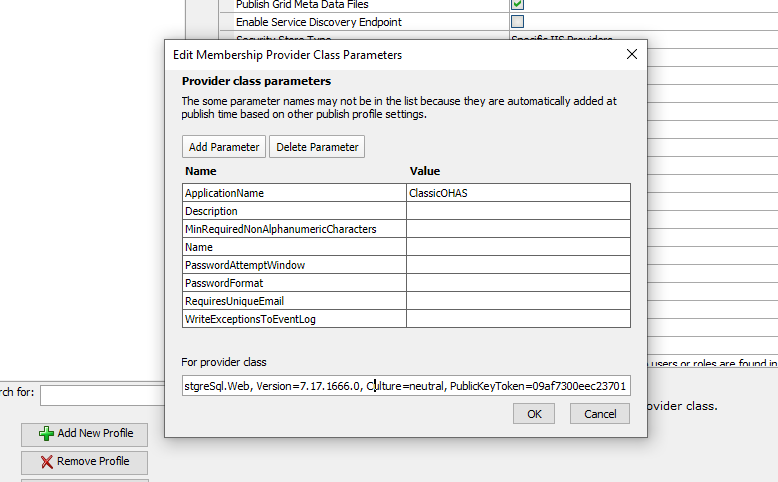
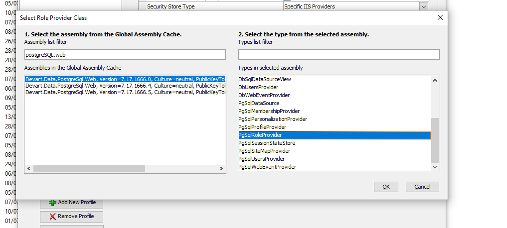
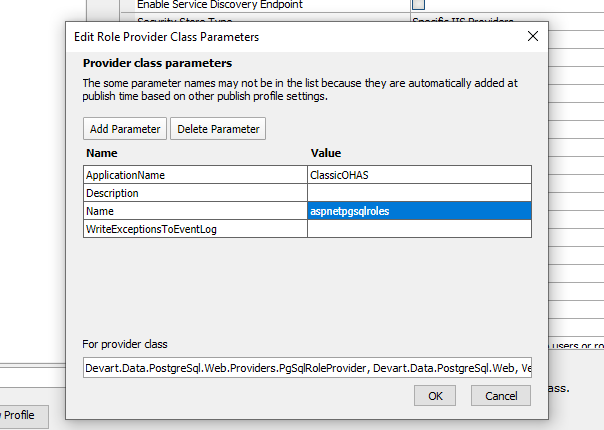

This article provides some guidance for configuring Alpha Anywhere Application Server for IIS to use the PostgreSQL Membership and Role providers. In this example, we are using dotConnect provider sold by DevArt. For product information, see DevArt dotConnect
Custom Membership and Role providers offer extensibility to Microsoft Internet Information Server (IIS) in order to store users and roles in alternate locations without the need for the web application to be aware of the underlying implementation. In this particular case, the provider stores users and roles in a PostgreSQL database. There are other providers supported under IIS, but we will focus on Membership and Role providers here.
In order to use a custom Membership or Role provider, the Alpha Anywhere Application Server for IIS publish profile must be configured to use the custom provider. You must also install the provider on your server. Be sure to install the 32-bit version of the provider where there is one!
If you have not already done so, download and install the PostgreSQL database software. Install it on a server accessible from the server running your application under Microsoft Internet Information Services (IIS).
Install the client software for PostgreSQL on any machine that will be running Alpha Anywhere or Alpha Anywhere Application Server for IIS. Note that you want to install the 32-bit ODBC driver. YOu can do this using the Stack Builder tool that comes with PostgreSQL. You can also choose to install the x86 installer for the ODBC driver (this is a Microsoft Installer file, also called an .msi file.)
Note: It is a good idea to install PgAdmin4 along with your database so you can administer your server. Follow the instructions on the installer to do this.
Follow the instructions on the DevArt site to download and install dotConnect on the IIS server machines as well as the machine you are using to develop your web application.
Be sure to install all libraries
Create a database on your PostgreSQL Database Server to be used to store users and roles. You can call it whatever you want, but we will call it "Security" for this example.
dotConnect includes a script you can run to define the schema to be used by the Membership and Role providers.
You can find the script in the folder C:\Program Files (x86)\Devart\dotConnect\PostgreSQL\Web\ASP.NET 2\InstallWebTables.sql
You must first set the Lockout after failed attempts in the Web Project Security. This value must be between 1 and 100 inclusive as unlimited attempts is not allowed by the DevArt membership provider.
Open the web project Security Settings dialog.
Go to the Login Options tab.
Set the Lockout after failed attempts value to 100 if you want "unlimited attempts". Otherwise, enter the number of attempts. It is recommended that this not be less than 5.

In the Publish setting select Specific IIS Providers - Custom
Set the Membership Provider Connection String to the string "host=server;User ID=user;Password=password;database=database" substituting the actual values for parameters as shown below.
Host - name of the server where the database is hosted - could be localhost or dns name
Password - password for the user on the database instance
User - user of the database
Database -Name of the database on the host
Set the Membership Provider Connection String Name to PostgresMembership
Set the Membership Provider Class Name
Click on the ellipsis to the right of the entry.
On the Select Membership Provider Class dialog, enter "postgreSQL.Web into the assembly filter text box.
Select the Devart.Data.PostgreSQL.Web assembly from the list of assemblies in the Global Assembly Cache.
Select the class PgSqlMembershipProvider from the list of types in the list on the right.

Set the Membership Provider Class Parameters
Click the ellipsis to the right of the entry.
The Edit Membership Provider Class Parameters dialog will be displayed.
Enter a unique name for your application in the ApplicationName text box. A security database may contain users and roles for more than one web application. The name your provide uniquely identifies the users and roles for the application published from your profile.
Make any changes needed to other parameters as suggested by the DevArt documentation for dotConnect

Set the Role Provider Connection String to the string "host=server;User ID=user;Password=password;database=database" substituting the actual values for parameters as shown below.
Host - name of the server where the database is hosted - could be localhost or dns name
Password - password for the user on the database instance
User - user of the database
Database - Name of the database on the host
Set the Role Provider Connection String Name to PostgresRole
Set the Role Provider Class Name
Click on the ellipsis to the right of the entry.
On the Select Role Provider Class dialog, enter "postgreSQL.Web into the assembly filter text box.
Select the Devart.Data.PostgreSQL.Web assembly from the list of assemblies in the Global Assembly Cache.
Select the class PgSqlRoleProvider from the list of types in the list on the right.

Set the Role Provider Class Parameters
Click on the ellipsis to the right of the entry.
The Edit Role Provider Class Parameters dialog will be displayed.
Enter a unique name for your application in the ApplicationName text box. A security database may contain users and roles for more than one web application. The name your provide uniquely identifies the users and roles for the application published from your profile.

Before publishing make sure all users within the security settings in your web project contain emails and that they are unique. There is a a setting to not require unique emails in the Membership Provider Parameters that you set to override this behavior.
When you publish your application, the users and roles will be published from your web project to the target database automatically. You can verify this by looking at the database using PgAdmin4.